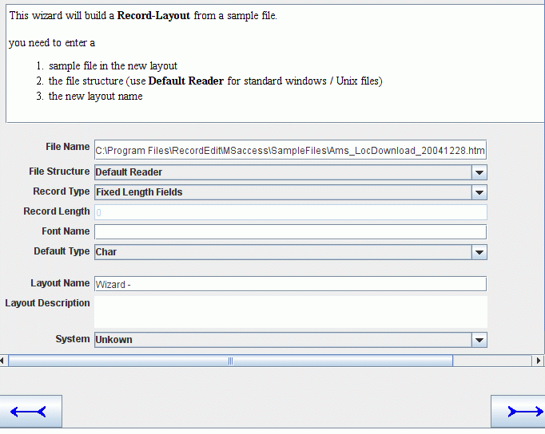
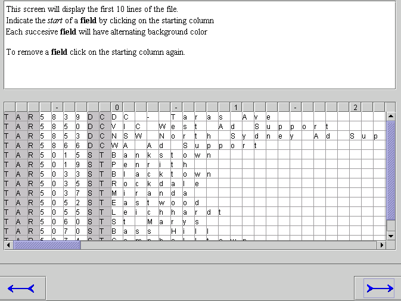
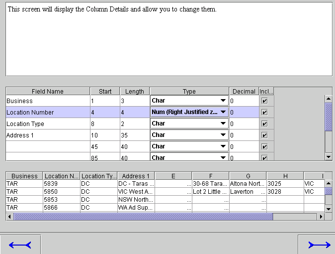
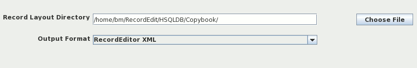
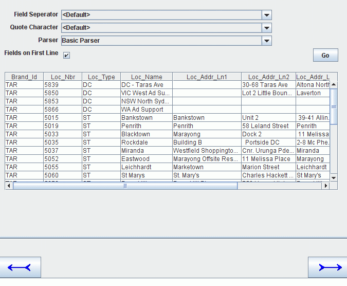
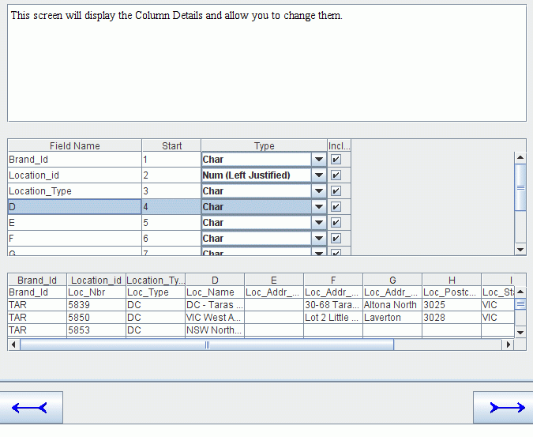
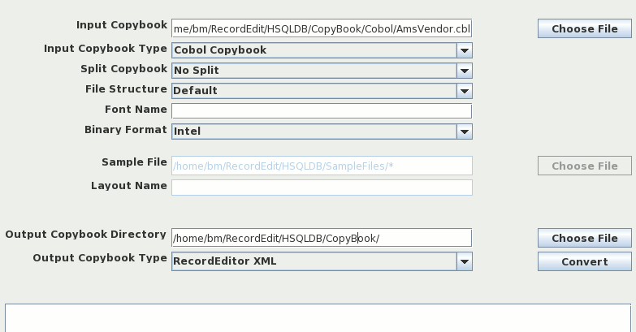
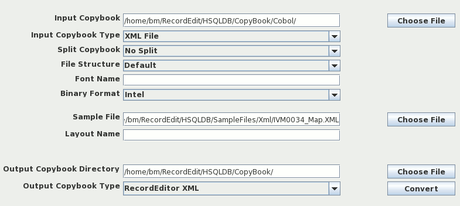

JRecord
JRecord
Layout Wizard |
|||||||||||
|
Layout Wizard |
|||||||||||
The Record Layout Wizard guides you through creating a record layout using a file as the basis. On all the wizard screens, you can use Left and Right Arrow buttons (at the bottom of the screen) to move between the screens. There are 2 basic groups of Screens:
Fixed Width | Screens for defining Fixed field width Files. See "Field Position screen" and "Field Definition screen". |
CSV | Screens for defining a CSV file. See "CSV Details" and "CSV Field Definition" |
On the file screen you enter file details and the name of the record layout being created. The field Record Types determines wether you travel down the Fixed Width route ("Field Position screen" and "Field Definition screen") screens or the CSV route ( "CSV Details" and "CSV Field Definition").

Fields on the window are:
File Name | Name of the file you are building a layout for |
File Structure | How the file is organised. If you are using Standard Windows / Linux Text files leave it as Default Reader |
Record Type | This is where your specify wether it is a Fixed Width or a CSV file. It also determines wether you see the Fixed Width screens "Field Position screen" and "Field Definition screen" or the CSV Screens "CSV Details" and "CSV Field Definition". |
Record Length | Record Length for Fixed width files (i.e. files where all lines are the same length and there is no line Carriage Return and\or line Feed denoting then end of a record). |
Font Name | Font Name of the file (e.g. CP037 for US Ebcidic Characters). |
Default Type | What Types Fields to initially assign to a field. |
The second screen displays the file with the fields in alternating background colors.
To create a new field, click on the first column of the field.
To remove a field, click on the first column again

The final screen is for defining the field names and field types.
Once all the fields have been defined, click on the right arrow button to define the new layout.

Final screen lets you specify the output directory and the Output Format. I would suggest using RecordEditor XML

On this screen you specify the basic CSV file structure (i.e. field separator; quotes).

Fields on the Screen
Field Separator | Field used to mark the end of one field and the start of the next | ||||||
Quote Character | Quote character used to surround Text Fields | ||||||
Parser | Parser used to split lines up into fields. For most files, the Basic Parser is the best to use. But the three parsers provided are:
| ||||||
Fields on First Line | Indicates wether the first line of the file holds the field names. |
This screen is used to define the fields (columns) in the file.

Also with Layout Wizard is the Convert Layout utility. It can convert a Layout from one format (say Cobol) to XML. It can also read a sample XML file and write a layout for it.
Following is how to convert a Cobol Copybook to XML. Note: Input Copybook is filled in and Copybook Type is set to Cobol.

To build a layout for a XML file. Note: Sample File is filled in with a XML file and Copybook Type is set to XML.

| JRecord at SourceForge | Download Page | Forums |